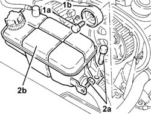
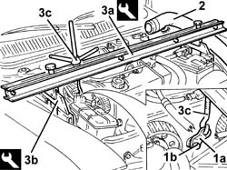
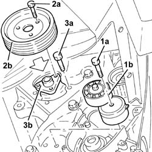
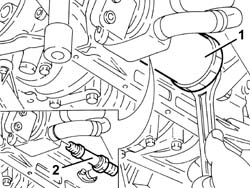
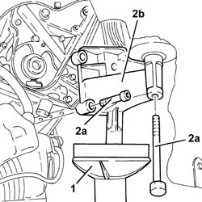
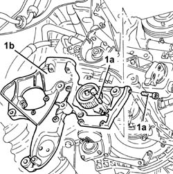
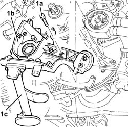
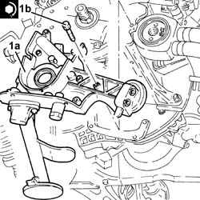
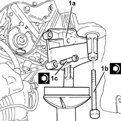
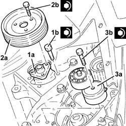

1020D16 front crankshaft oil seal cover - r+r and replace gaskets for versions with airconditioner
- Path
- Procedures > 10 ENGINE > 1020 CRANKCASE SUMP AND COVERS > 1020D oil seals on crank shaft > 1020D16 front crankshaft oil seal cover - r+r and replace gaskets for versions with airconditioner
- Kind
- repair procedure (removal / refitting; the operation number is the code)
- Applies to
- engines: 1.6 TS , 1.8 TS, 1.9 JTD 8v , 2.4 JTD 10v; all production periods
- Interactive page
- https://sloeber94.github.io/elrnDB-a156/en/#/3237656
Applies to: engines: 1.6 TS , 1.8 TS; all production periods
 Removing
Removing
 Refitting
Refitting1020D10 front crank shaft oil seal cover - r + r and replace seals with timing belt removed
Applies to: engines: 1.6 TS , 1.8 TS; all production periods
Refitting
Removing1020D10 front crank shaft oil seal cover - r + r and replace seals with timing belt removed
Applies to: engines: 1.9 JTD 8v ; all production periods
Removing
Refitting1008C10 power unit upper reaction link r r
1016A10 sound-proofing cover - r + r .
1008C14 engine link bracket - r r
4450B10 Front WHEEL (one) - R.R.
7055B64 Engine compartment DUST shield in front wheel arch (one), left or right - R.R.
1092G10 single engine belt r r
1092A12 crankshaft pulley - r+r for versions with air conditioner
1032B47 toothed drive pulley - r r for versions with air conditioner
1076B50 exhaust pipe attachment to engine - r + r
2710A35 intermediate drive shaft mount - r r
1020A20 crank case oil sump - r + r clean seals for sealant application
1. Undo the bolt (1a) and remove the fixed timing belt tensioner (1b).
2. Undo the bolts (2a) and move the engine cooling reservoir (2b).

Applies to: engines: 1.9 JTD 8v ; all production periods
1. Fit the power unit mounting bracket (1a) using the bolt (1b) securing the pressure pump mounting the inlet chamber.
2. Disconnect the air supply hose from the inlet chamber, then move it.
3. Fit the tool (3a), complete with mountings (3b) and support the power unit attaching the rod (3c) for the tool to the bracket fitted previously.
 | Name | Country |
|---|---|---|
3a | Crossmember | 1.820.581.000 |
| Name | Country |
|---|---|---|
3b | Support mountings | 1.870.650.000 |

Applies to: engines: 1.9 JTD 8v ; all production periods
1. Undo the bolts (1a) and remove the moving timing belt tensioner (1b).
2. Undo the bolts (2a) and remove the power assisted steering pump pulley (2b).
3. Undo the bolts (3a) and move the power assisted steering pump (3b) backwards in relation to the support.

Applies to: engines: 1.9 JTD 8v ; all production periods
1. Remove the cartridge engine oil filter using a suitable tool.
2. Remove the connector securing the engine oil heat exchanger.

Applies to: engines: 1.9 JTD 8v ; all production periods
1. Position a hydraulic jack under the rigid power unit support, timing side.
2. Undo the bolts (2a) and remove the timing side power unit rigid rear support (2b).

Applies to: engines: 1.9 JTD 8v ; all production periods
1. Undo the bolts (1a) and remove the power assisted steering pump and alternator mounting (1b).

Applies to: engines: 1.9 JTD 8v ; all production periods
1. Undo the bolts (1a) and remove the crankshaft front cover (1b) complete with inlet (1c).
Remove the seal.

Applies to: engines: 1.9 JTD 8v ; all production periods
Refitting
Removing1. Fit the crankshaft front cover (1a), complete with inlet and a new gasket and fix it tightening the bolts (1b) to the recommended torque.
 | Fastening | Component | Ø | Value (daNm) |
|---|---|---|---|---|
1b | Bolt | CRANKSHAFT FRONT COVER | M6 | 0.8 ÷ 1.0 |

Applies to: engines: 1.9 JTD 8v ; all production periods
Fit the power assisted steering pump and alternator mounting and fix it using the bolts.
1. Fit the timing side power unit rigid support (1a) and fix it tightening the bolts (1b) and (1c) to the recommended torque.
| Fastening | Component | Ø | Value (daNm) |
|---|---|---|---|---|
1b | Bolt | ENGINE MOUNT TIMING SIDE | M12 | 4.2 - 5.2 |
| Fastening | Component | Ø | Value (daNm) |
|---|---|---|---|---|
1c | Bolt | ENGINE MOUNT TIMING SIDE | M10 | 4.3 - 5.2 |

Applies to: engines: 1.9 JTD 8v ; all production periods
Tighten the connector securing the heat exchanger to the recommended torque.
| Fastening | Component | Ø | Value (daNm) |
|---|---|---|---|---|
- | Connector | ENGINE OIL HEAT EXCHANGER | - | 6.0 |
Fit the oil filter tightening it fully by hand after having lubricated the gasket using engine oil.
1. Refit the power steering pump (1a) in its seating and tighten its bolts (1b) to the specified torque.
| Fastening | Component | Ø | Value (daNm) |
|---|---|---|---|---|
1b | Bolt | POWER STEERING PUMP | M8 | 1.9 - 2.3 |
2. Fit the power assisted steering pump pulley (2a) and fix it tightening the bolts (2b) to the recommended torque.
| Fastening | Component | Ø | Value (daNm) |
|---|---|---|---|---|
2b | Bolt | POWER STEERING PUMP DRIVE PULLEY | M6 | 0.6 - 0.8 |
3. Fit the timing belt moving tensioner (3a) and fix it tightening the bolt (3b) to the recommended torque.
| Fastening | Component | Ø | Value (daNm) |
|---|---|---|---|---|
3b | Bolt | MOBILE TIMING TENSIONER | M10 | 4.2 - 5.2 |

Applies to: engines: 1.9 JTD 8v ; all production periods
Remove the tools used for supporting the power unit.
| Name | Country |
|---|---|---|
- | Crossmember | 1.820.581.000 |
| Name | Country |
|---|---|---|
- | Support mountings | 1.870.650.000 |
Connect the air supply hose to the inlet chamber.
Place the engine coolant reservoir back in its housing and secure it using the bolts.
Fit the fixed timing belt tensioner and secure it using the bolts.
1020A20 crank case oil sump - r + r clean seals for sealant application
2710A35 intermediate drive shaft mount - r r
1076B50 exhaust pipe attachment to engine - r + r
1032B47 toothed drive pulley - r r for versions with air conditioner
1092A12 crankshaft pulley - r+r for versions with air conditioner
1092G10 single engine belt r r
7055B64 Engine compartment DUST shield in front wheel arch (one), left or right - R.R.
4450B10 Front WHEEL (one) - R.R.
1008C14 engine link bracket - r r
Applies to: engines: 2.4 JTD 10v; all production periods
Topics linked from this page (14)
- 1008C10 power unit upper reaction link r r
- 1008C14 engine link bracket - r r
- 1016A10 sound-proofing cover - r + r
- 1020A20 crank case oil sump - r + r clean seals for sealant application
- 1020D10 front crank shaft oil seal cover - r + r and replace seals with timing belt removed
- 1020D14 front crank shaft oil seal cover - r + r and replace seals for versions with oil pump on crank shaft, timing side
- 1032B14 toothed timing belt - r + r for timing adjustment or replacement versions with air conditioner
- 1032B47 toothed drive pulley - r r for versions with air conditioner
- 1076B50 exhaust pipe attachment to engine - r + r
- 1092A12 crankshaft pulley - r+r for versions with air conditioner
- 1092G10 single engine belt r r
- 2710A35 intermediate drive shaft mount - r r
- 4450B10 Front WHEEL (one) - R.R.
- 7055B64 Engine compartment DUST shield in front wheel arch (one), left or right - R.R.